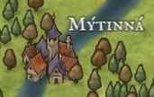

Mýtinná
První město, na které člověk narazí poté, co vyleze z Chvozdu, je to první město z velké Laréze, na které narazí. Odsud vede přímá cesta do Hayaxu
Dobrodružství, která se zde odehrála:
- Hledání ztraceného syna
- - Franci Jeszetovi se ztratil syn, boj s vlky
- Doprovod karavany
- - doprovod zboží do Garagoru, potkání Narmera a Neery
